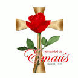

Niños en las Misas
Pensando en el bienestar de los menores ante esta pandemia, familias con niños no seran admitidos dentro de la iglesia. Tienen la opción de ver la misa en linea desde el estacionamiento o desde sus casas ya que el padre va a estar dando la Eucaristia durante media hora luego de terminada la misma.
Ofertorio
Dios en su bondad nos sigue alimentando con su palabra se tu también agradecido con tu iglesia en medio de estas situación difícil. Sabemos tú dificultad pero en generosidad si puedes ayudar con el sostenimiento de tu templo. Puedes enviar tu colecta semanal por correo o través de este website.
Una de las metas de nuestra parroquia es fomentar la Hermandad de Emaús la cual es una comunidad de hermanos, quienes a través de una experiencia de encuentro personal con JESUS RESUCITADO, han decido seguirle, servirle en Su IGLESIA, y ser agentes de cambio y transformación del mundo. Toda persona laica y/o religiosa no católica o de otras confesiones. Todos necesitamos experimentar el amor de Dios en nuestras vidas. Emaús es un camino de peregrinaje. Asi es nuestra vida de fe. Se trata de encontrase con Jesús al que tantas veces no lo reconocemos en nuestra vida tan vacía y tan llena de cosas materiales. Un paso para pertenecer a esta hermandad es asistir a un retiro que se llevara a cabo en las siguientes fechas:
Si estas interesado en participar, favor de contactar a:
- Coordinación de Emaús, (913) 972.1308
- Oficina Parroquial, (609) 261.0181